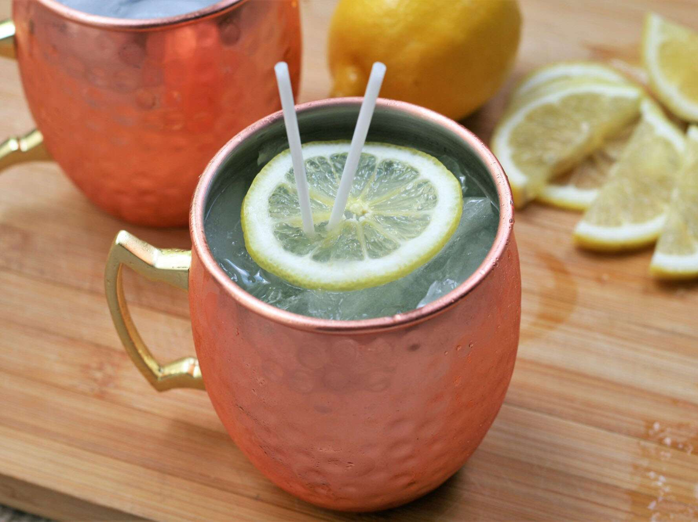

Limoncelle Moscow Mules

Description
This is a fun twist on the classic Moscow Mule, using limoncello for a refreshing, lemony summertime cocktail. Use a good-quality ginger beer, such as Fever Tree
Ingrediants
- 1 cup ice
- ½ fluid ounce fresh lime juice
- 1½ fluid ounces limoncello liqueur
- 1½ fluid ounces vodka
- 5 ounces ginger beer
- 1 thin lemon slice (optional)
Steps
- Fill a copper mule mug with ice. Add lime juice, limoncello, and vodka; stir to combine. Top with ginger beer. Lightly stir again and garnish with lemon slice.